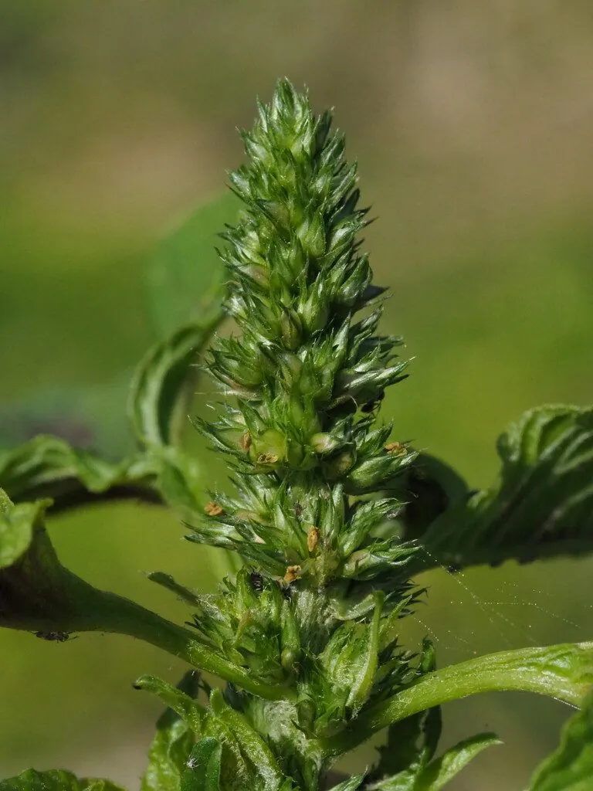

花卉与草本 · 植物界
雁来红 Amaranthus tricolor

苋科一年生草本，顶端叶片在秋季转为鲜红或黄红相间，如雁来时染红枝头，是观叶与食用兼用的植物，原产热带亚洲。
- 分类
- 门被子植物门纲木兰纲目石竹目科苋科属苋属
- 栖息环境
- 热带亚洲的田边、路旁与荒地，喜温暖、阳光充足
- 地理分布
- 原产热带亚洲，中国各地栽培或野生
- 保护级别
- 暂无评估
物种志
雁来红为苋科苋属一年生草本，株高 1–1.5 米，茎直立，少分枝。叶片卵形至披针形，有绿、红、黄等色，秋季顶端叶片转为鲜红或黄红相间，十分醒目。花小，绿色，密集成穗状花序，花期 7–8 月；果实为胞果。
雁来红原产热带亚洲，中国各地栽培或野生，喜阳光充足、温暖和湿润的环境，适应性强。它顶端叶片在秋季转为鲜红或黄红相间，因大雁南来时叶色变红而得名，是观叶与食用兼用的植物：嫩叶可作蔬菜，种子可食，全草可入药。栽培以播种为主，生长期需充足阳光，叶色才会鲜艳；也可用于花境和庭院点缀。
形态与习性
- 株高1–1.5 米，茎直立少分枝
- 花期7–8 月，穗状花序绿色
- 果期9–10 月，胞果
- 光照喜充足阳光
- 水分喜湿润，忌积水
- 土壤疏松肥沃、排水良好的壤土
- 繁殖以播种为主
- 主要用途观叶、嫩叶食用、全草入药
趣味知识
- 雁来红顶端叶片在秋季转为鲜红，因大雁南来时叶色变红而得名。
- 它原产热带亚洲，嫩叶和种子可食，全草可入药。
- 生长期需充足阳光，叶色才会鲜艳。
- 雁来红适应性强，在田边和荒地也能生长。